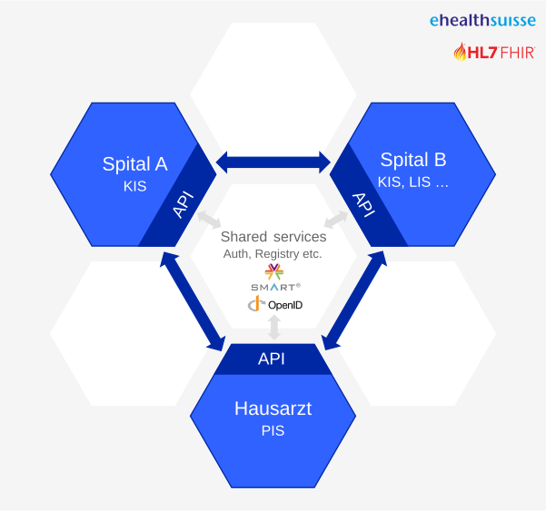

An initiative of University Medicine Zurich UMZH
Digital interoperability for Swiss healthcare providers
Starting with the Zurich university hospitals, built to scale nationally. Clinical orders and referrals move between providers automatically – over open, standardized FHIR APIs.

Automate
Automated, standardized clinical order and referral workflows between healthcare providers.
Standardize nationally
A nation-wide standard for digital clinical orders, built on CH Core, CH eTOC, CH ORF, CH ELM and the international COW IG.
Hand over
Mid-term, hand over the maintained artifacts and operated services to national initiatives – so the standard outlives its regional origin.
What is UMZH Connect?
An initiative and stewarding organisation, funded and mandated by UMZH. We develop the shared standard, operate the shared services and govern the onboarding of new participants.
The problem
- Referrals, transfers and external orders – lab, radiology – still require manual re-entry of clinical and administrative data across systems.
- The result: delays, inconsistencies and avoidable workload.
The solution
- “Push-button” and fully automated data exchange between providers over standardized FHIR / REST APIs.
- One data contract: a FHIR Implementation Guide based on the international Clinical Order Workflow (COW), adapted to Swiss specifics.
- Data stays with the provider – partners access only what an order needs.
Use-case driven, not technology driven
- Each use case defines the data structures and the workflow – the API operations the collaboration needs.
- Use cases are prioritized by clinical and business value.
- Each is documented in the Implementation Guide – for example orthopedic and sarcoma tumor-board referrals.
Lowering the entry barrier
- Each participant runs its own IG-conformant FHIR API.
- Open-source reference implementations – sandbox and party stack, including KIS/PIS plug-ins – help providers comply with the IG and integrate their existing systems.
What we govern and operate
Everything is published open source and open for contribution by the community.
Implementation Guide
The binding data contract: use cases, data structures, API operations and security.
mCSD Registry
Public, read-only directory of participants, the services they provide and their endpoints.
Authorization Server
Secure machine-to-machine access, central onboarding and security management.
Sandbox & Party Stack
Reference implementations that speed up integration with existing systems.
Operating principles
Open, standards-based and accountable governance makes UMZH Connect a trusted foundation for Swiss healthcare interoperability.
Standards first
Built on HL7 FHIR and Swiss national IGs. The IG is balloted through HL7 CH, with adoption as an HL7 CH IG as the next step.
Open
Open specifications and open-source artifacts. The Implementation Guide is published under CC0 1.0.
Security and data protection by design
Built into architecture, access and governance: no central data store, access only to what is released for an order, and a mandatory review for every change and new participant.
Lean, accountable governance
Steering Committee, Technical Office, Working Groups and Participant Assembly – lean during the pilot, scaling with the network.
From concept to pilot within a year
Phase I delivers the specification and the pilot. Phase II extends the ecosystem and the use cases.
-
August 2025
Project start
-
April 2026
Concept & specification
-
Q4 2026 · now
Pilot roll-out: USZ & Balgrist
-
Q1 2027
Committed participants: PUK & KiSpi
-
Mid 2027
Pilot with SwissHDS
-
End 2027
Live operation with extended ecosystem
Governance
Lightweight but accountable: the smallest governance that works – clear owners, short paths and written decisions. UMZH provides the mandate and budget.
Steering Committee
Strategic authority and last point of escalation; accountable for the handover.
Technical Office
The core team, appointed by the Steering Committee.
Working Groups
Where analysis, design and recommendations happen – organized by the Technical Office, open to delegates of every participant.
Participant Assembly
The voice of all onboarded participants; elects participant representatives to the Steering Committee.
Join us
Healthcare providers – hospitals today, practices and labs later – join through a governed onboarding pipeline.
- Apply
- Conformance testing
- Security & data-protection review
- Registry entry & credentials
- Go-live
Membership commitments
- Governance participation
- HL7 CH membership
- IG-conformant APIs for your roles and use cases
- Open-source contribution
- Financial contribution (if applicable)
Documentation
Want to contribute to the standard? Raise a change request or join a Working Group – the Participant Assembly and Working Groups are open to delegates from every participating organisation.
Contact
Dr. Michael Rebsamen
Balgrist University Hospital Forchstrasse 340, 8008 Zürich michael.rebsamen@balgrist.chAndreas Ahlm
University Hospital Zurich, Direktion ICT Sonnentalstrasse 25, 8600 Dübendorf andreas.ahlm@usz.ch